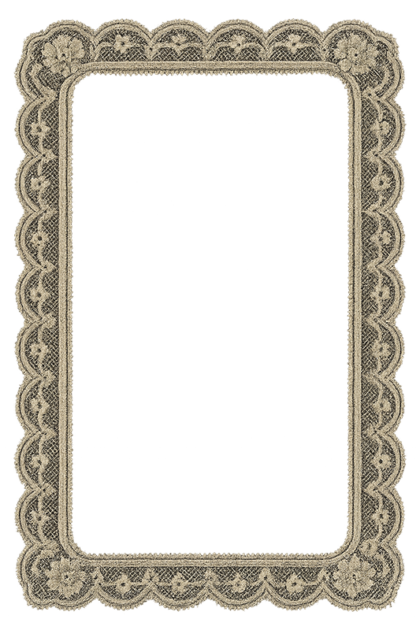
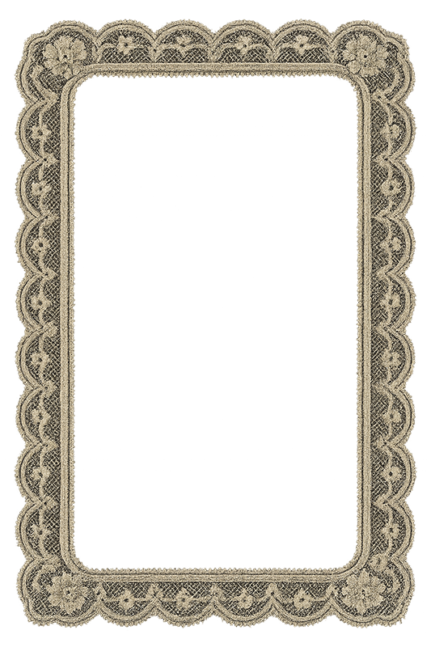

Multimedia Artist &
Graphic Designer
Crafted in blood, stitched with lace.
VIEW PORTFOLIOAbout the Artist
I'm Leah Cortez, a Chicana graphic designer and visual artist based in Corpus Christi, Texas. I create bold, expressive visuals that explore memory, identity, and emotion through a blend of graphic design and fine art. My work is rooted in storytelling — using design as a tool to communicate what words often can't.
Read Full Bio →Featured Works
 



Latest Project
Genesis: Reframing Eve
Motion Design • Kinetic Typography
A kinetic typography animation that reframes the Genesis narrative through Eve's perspective. Using blackout poetry techniques in After Effects, this piece challenges traditional interpretations and centers Eve's agency in the story of knowledge, choice, and humanity's beginning.
View Project →Recognition
Build Your Portfolio
Select the creative areas that interest you most, and I'll curate 3 pieces from my collection that match your vision.
Get In Touch
Connect with me on social media or send a direct message: